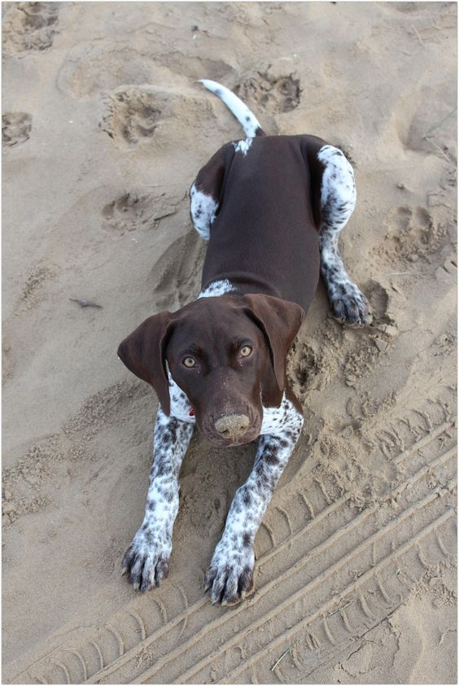

Aussie Sheperd
Pariente del pastor alemán.Inquietos y ágiles, así son los pastores australianos.
Cálidos, deportistas y, ¡encantadores!
Dachshund
Conocidos como versión de bolsillo.Alegres, traviesos y compañeros, así son estos pequeños compañeros.

Pointer
Muchas veces lo confunden con un dálmataEncontrá a tu compañero ideal
Refugios en adopción
Tips de cuidado
- Pasear a tu compañero de 4 patas al menos 3 veces al día.
- Alimentarlo con la comida balanceada que te recomiende tu veterinario amigo.
- Y, por sobre todas las cosas, darle amor.